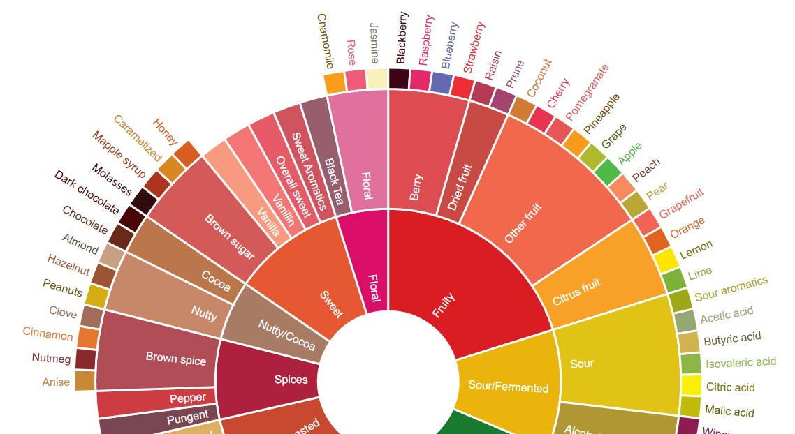

March 26, 2025
In 9th century Ethiopia, a curious goatherd named Kaldi decided to taste a fruit that seemed to be energising their flock. They soon discovered that these red cherries kept them up into the early hours, and so presented them to the local monastery for use in late night devotions and prayers. Or so the legend has it.
We will never know who brewed and sipped the first cup of coffee, but we can say with some certainty that its storied past begins in Ethiopia, continues into Yemen and then throughout the Arabian Peninsula. That it has been both lauded and disowned by various cultures and religions for its psychoactive qualities, and that the transportation of a single plant and even a single seed have been responsible for its proliferation in Southeast Asia and the Americas. So shoutout to Kaldi for discovering some mysterious cherries that would become the source of one of the world's most consumed beverages (and least regulated recreational drugs).
Like nearly everyone else in the West who grew up with this drink so accessible, I knew nearly nothing about coffee, apart from that my brother told me "Drink it black, otherwise you don't like coffee, you just like milk and sugar". McDonald's ad campaigns claiming 'Quality coffee shouldn't cost a fortune', Pret A Manger's 99p filter, and an entire aisle decked out with cheap grounds in all UK supermarkets led me to believe that I was owed affordable access to this product.
Then, in 2022, I saw a friend pay €14 for a bag of whole beans at a café in Madrid, after having a longer conversation with the barista than I had ever entertained. Detailed on the packaging was the country of origin, altitude, and farm where the coffee was grown, as well as the bean variety, processing type, and flavour notes. It was specialty coffee, they said. This information meant nothing to me, and in all honesty when they kindly brewed me a cup I didn't find it particularly special or exciting. It was black coffee, just like I'd always had, and coffee is coffee. Right?
The seed was planted, however, and steadily bloomed over the next couple of years. I began buying beans from specialty cafes and brewing them at home with a hand grinder and AeroPress. I no longer haphazardly gulped down free coffees offered in the office where I worked, or opted for the most economical option when on the go. Drinking coffee transformed from a casual habit for productivity to a careful ritual to be enjoyed with friends, where I would take pleasure in each sip to identify the notes of 'stone fruits' and 'strawberry gelato' . I connected with specialty coffee on an ideological level, understanding that this industry moved towards direct relationships with and better pay for farmers, and away from the speculation-based commodity pricing model.
Reading about and working in specialty coffee I have come to understand that buying expensive beans from a third wave café is not a fix-all for the issues within the coffee industry. While the ideal is an equitable and sustainable relationship with happy and autonomous farmers, capitalism always finds a way to strong-arm in some bullshit. I have learnt about the rich white men that buy up coffee farms in Panama, the coffee futures market that seems to always turn a profit for Western importers while producers rarely set their own price, and the pressure put on farmers to cater to the latest trends in anoxic water pillow fermentation from the demanding specialty consumer. Coffee is also inseparable from the colonial history of trade and cruel exploitation in plantations, and it is one of many industries that continues to contribute to the economic disparity between the Global North and South.
And in spite of all of this, I have fallen in love with this beautiful bean and it's many intriguing facets. The expression of biology in its processing, physics in its brewing, and chemistry in its taste provide almost bottomless rabbit holes to explore. For now, I would love to continue to work toward change in this imperfect industry.
I want to always be critical of the things I engage in, and along with its many shortcomings I do believe that specialty coffee opens up paths for redemption. One impactful way it achieves this is by creating a more conscious consumer. Unlike most of the products we buy (then eat, lose, break, return, waste, forget about), we are encouraged to engage with the supply chain by familiarising ourselves with the country of origin, the processing method, the farm and perhaps even the farmer. Then there is the intentionality in the consumption of the product. The coffee ritual I mentioned before really does represent the attitude for many people who brew coffee at home. You grind the beans, take care in the brewing, and focus diligently on the flavours that have been hinted at on the label. In my opinion, this is quite an incredible thing - imagine a world in which we took such care and interest with everything we spent our money on.
